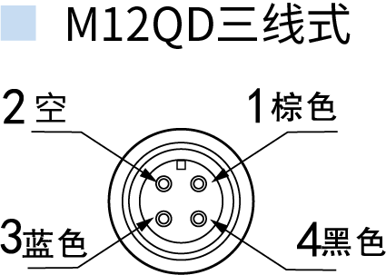

强磁开关选型 · 简版
注释：1.（□）方框为可省略部分；
2.（A）字母 / 数字 / 数字字母组合为必选部分；
2.（A）字母 / 数字 / 数字字母组合为必选部分；
AN-
A0
AA-
-
02-
艾奇诺
品牌代号 AN系列型号
01-999、AB-YZ、A0：系列型号 数字前加横线，字母后加横线，数字字母组合前后都加横线沟槽类型（第 1 个 □）
AA：代表安装方式 G / H / E / BD 圆缸 注：BD 必须选 BDQ 配件（固定装置） 沟槽类型为 A0 系列选项，其他不选输出方式（第 2 个 □）
空白：两线电子式（默认不写字母） N：三线式 NPN 输出 P：三线式 PNP 输出 S：三线式自动识别 NPN/PNP开关逻辑（第 3 个 □）
空白：常开型 NO（常用开关逻辑）灵敏度
空白：开关型号设定灵敏度 D：低感应灵敏度(比常规更低)固定装置
P：为拉杆夹具（参考 P 选型表），例如 P6 适配拉杆直径 Ø4.2~Ø6 QA(S)：为圆缸绑带（参考 QA(S) 选型表）出线类型
空白：常规出线，不带接头 M12QD(SC) / M12QD(SE)：两线 M12 快速接头-公头 M12QD(3C)：三线 M12 快速接头-公头电线长度
0.3：电线长度 0.3M（带 QD 接头） 0.5：0.5M（带 QD 接头） 02：电线长度为 2 米，其他依次推理M12 接头接线图

| 型号 | 1 | 2 | 3 | 4 |
|---|---|---|---|---|
| M12QD(SC) | – | – | OUT(±) | OUT(±) |
| M12QD(SE) | OUT(±) | – | – | OUT(±) |
| M12QD(3C) | VCC | – | GND | OUT |